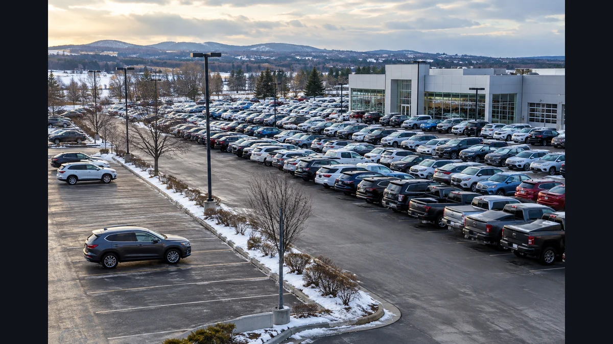
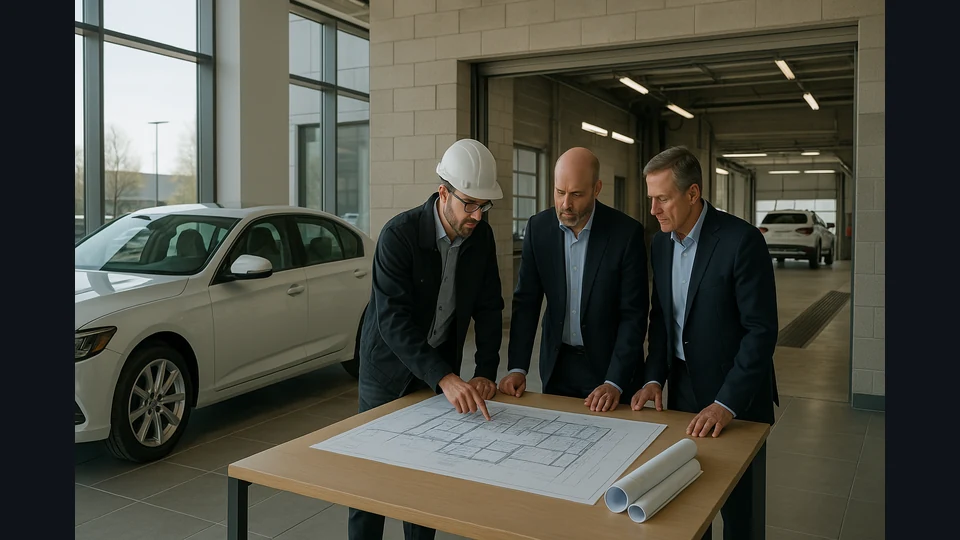

October’s auto market signal: availability is not affordability
More vehicles on the lot. Buyers stretching their budgets. Dealers weighing expensive commitments. October’s reporting revealed an industry working through several different capital constraints at once.

The signal
In One View
The strongest connection in this October review is a mismatch between available vehicles and affordable ownership. At the same time, dealership facility commitments compete for capital. AutoIntel’s interpretation: the useful question is where inventory, customer budgets and business investment can work together without relying on optimistic assumptions.
- Supply improved in the inventory data published during October, but conditions varied sharply by brand and price.
- Financing figures showed buyers committing more money over longer periods.
- Facility requirements added another investment question for dealership buyers and operators.
What October’s Reporting Revealed
October offered a useful warning against treating the automotive market as one problem with one solution. Cox Automotive’s October 15 inventory report showed September supply rising to 2.80 million new vehicles and 82 days, up from 75 days in August. These were September measurements published in October, rather than an October-end inventory count.[1]
The financing picture complicated that improvement. Edmunds reported that the average monthly payment on financed new-vehicle purchases reached $787 in the third quarter. Loans lasting at least 84 months represented 25.5% of financed new purchases. Those figures describe buyers who obtained financing; they do not show how many shoppers abandoned a purchase.[2]
Together, the reports suggest a more precise interpretation than either a supply recovery or a demand collapse. Vehicles can become more available while the route to ownership remains difficult. That tension is the organizing idea for this review, not a claim that every brand or customer faced identical conditions.
Why More Choice Does Not Settle the Payment
Availability answers whether a customer can find a vehicle. Affordability asks whether the purchase and ownership commitment fit that customer’s resources. Bringing the two closer requires the right product at a workable cost, rather than a larger lot count alone.
CarGurus’ October 6 quarterly review added a powertrain dimension. It described hybrid demand outpacing supply and different conditions for new and used EVs, while higher fuel and borrowing costs influenced shoppers’ choices. A customer’s response to pressure can therefore change the vehicle they consider as well as the amount they are willing to spend.[3]
For a monthly analysis, the connection matters more than a universal powertrain verdict. A dealer can have ample stock and still lack the vehicle that fits the intended buyer. Understanding that gap requires asking which models, ownership needs and financing circumstances are actually meeting at the point of sale.
The Other Capital Commitment: the Dealership Itself
Customer budgets were only one side of the month’s capital discussion. In an October 12 CBT News interview, Dave Cantin and Goree Architects’ Julie O’Dwyer explained how manufacturer facility requirements can affect dealership valuations and acquisition decisions. The discussion included signage, showroom and service-space changes, with costs depending on the scope of the project.[4]

AutoIntel’s connection is an operating question: how much capital is already committed before the next vehicle is sold? Stock, facilities and the customer transaction belong to different decisions, but each can narrow room to respond when the original plan changes.
That does not establish that facility spending caused October’s retail pressures. It shows why a growth plan deserves scrutiny beyond its headline acquisition price or expected sales volume. An attractive expansion can still carry obligations that need to be understood before its benefits arrive.
Industry Implications
For manufacturers, the question is whether the product and price mix matches the customers retailers are trying to reach. For dealers, it is whether the buying plan reflects their own sales evidence and the commitments already on the business.
For lenders and retail technology providers, the opportunity is to help make trade-offs visible. A tool is more useful when it clarifies the relationship between purchase price, financing terms and ownership needs. A fast process still needs to support a decision the customer understands.
The common thread is disciplined matching: products to buyers, inventory commitments to expected demand, and business investment to a realistic operating plan. This is an editorial framework drawn from the reports, not a measured ranking of dealership performance.
Risks
The first risk is confusing a national indicator with a local buying instruction. A second is treating an achievable monthly payment as a complete answer to affordability. Longer commitments can make a transaction possible without removing the consequences of financing more money.[2]
Another risk is putting several optimistic assumptions into the same plan: the vehicle sells promptly, the customer financing works and the investment delivers on schedule. The point is to test those assumptions separately, so that a change in one does not remain hidden by confidence in another.
Opportunities
The opening is to make decisions more specific. Identify the customer a vehicle is intended to serve, compare that expectation with recent sold results, and revisit the plan when the evidence changes. A broad monthly signal becomes useful when it improves the next concrete question.
The same discipline applies to investment. Clarifying the scope and timing of a facility commitment can improve the discussion around a dealership transaction. Clear information also creates a practical role for consultants and vendors: resolving an operating uncertainty, rather than adding another market summary.
What to Watch in November
The next test is whether the different constraints begin to ease together. Follow these questions as new reporting arrives:
- Does available inventory move closer to the models and prices buyers are seeking?
- Do financing terms improve the ownership commitment, as well as the monthly payment?
- Do observed hybrid and used-EV preferences translate into repeatable local sales results?
- Are dealership investment plans explicit about required facilities and the timing of returns?
October’s useful lesson is that availability, affordability and investment capacity deserve separate attention. The industry’s next improvement will be more convincing when those pieces begin to align.
Behind the analysis
Evidence & Source Notes
This thematic retrospective draws on reporting collected during October, with source-story timestamps through October 29 and a final daily edition dated October 30. Coverage of stories from October 30–31 is not established. Repeated feed URLs were deduplicated; syndicated versions may still overlap. The selected sources were checked against original publications on November 8. Several reports published in October measure September or Q3, as identified in the text. This is not a comprehensive account of every industry development. Connections and implications are AutoIntel interpretation.
- New-Vehicle Inventory Rebounds in September as Sales Pace Moderates
Primary inventory analysis used to verify the Cox figures discussed in retained CBT News inventory coverage. Measures September; days’ supply and unit counts are distinct indicators.
- New-Car Financing Records Pile Up in Q3 as Buyers Borrow More and Stretch Loans Longer
Primary Q3 financing release, checked against the Edmunds interview retained in the October collection. Statistics concern financed purchases, not all shoppers.
- CarGurus Intelligence Report — Q3 2026
Primary report behind the October 6 CBT News affordability and powertrain story. Listing interest, supply and sales measures should not be treated as interchangeable.
- How image compliance can reshape dealership valuations
Direct interview with Dave Cantin and Julie O’Dwyer about facility requirements and transaction economics. Practitioner commentary, not a representative survey or proof of market-wide causation.
The public podcast
Take the connected view with you.
Listen to AutoIntel Weekly for the developments and connections shaping the automotive industry.
Listen on Apple PodcastsListen to the public AutoIntel Weekly show.
AutoIntel Weekly Preview · Free
See the shifts.
Connect the week.
Three cross-source signals, one unlocked analysis, and a risk-and-opportunity preview—delivered free every Monday.
Get the Free Weekly PreviewSign up using the free Weekly Preview form on AutoIntel.News. $0 · Unsubscribe anytime. The Full Briefing is a separate paid subscription.